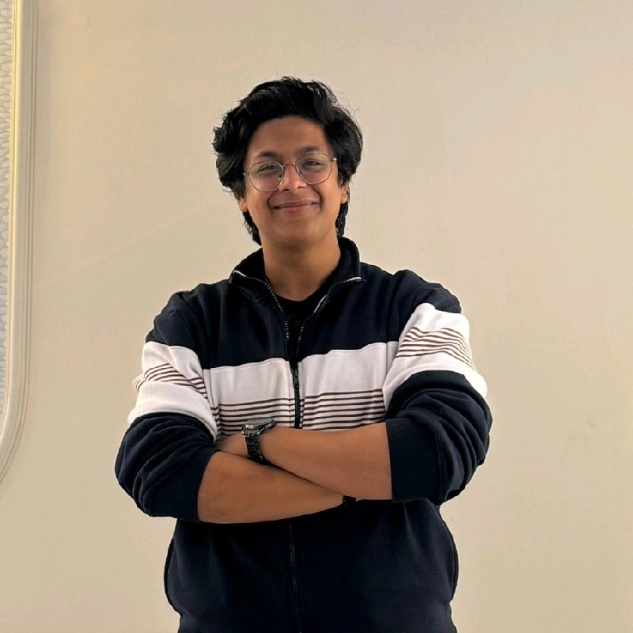
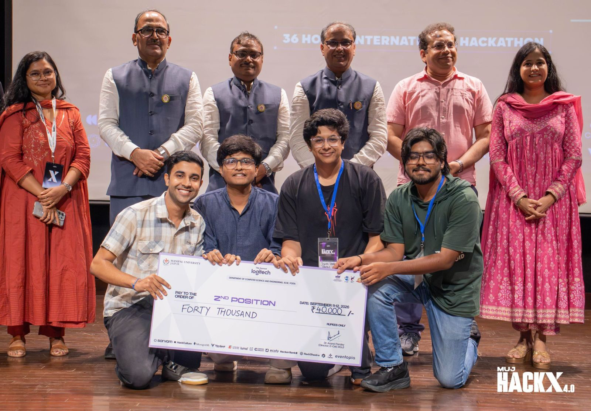
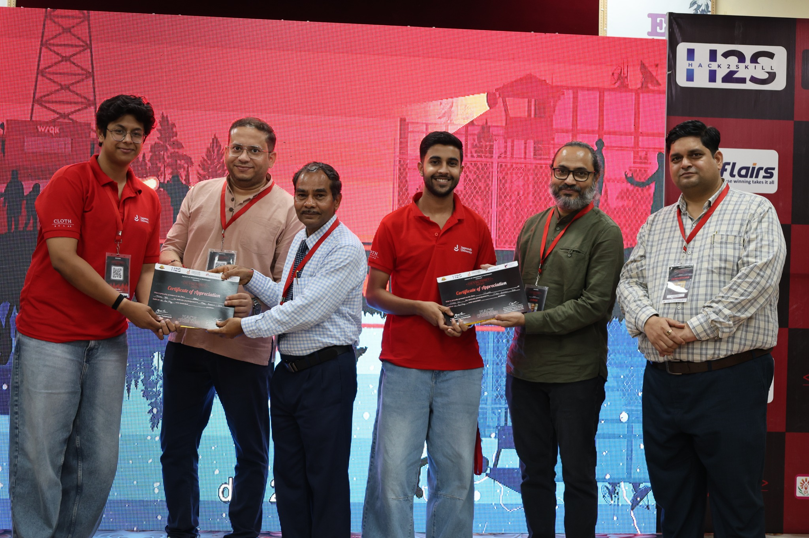
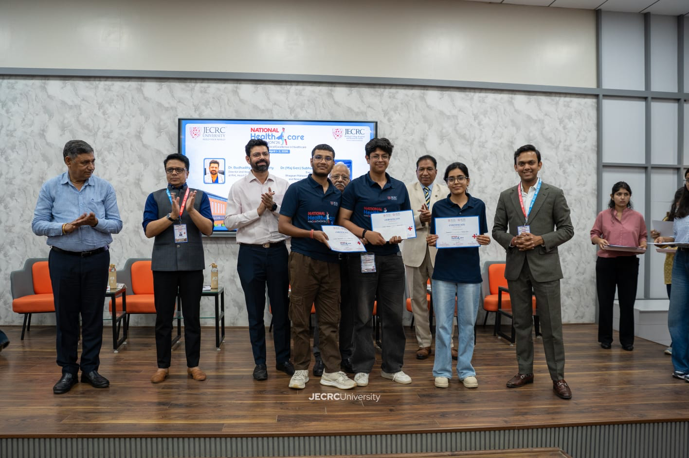
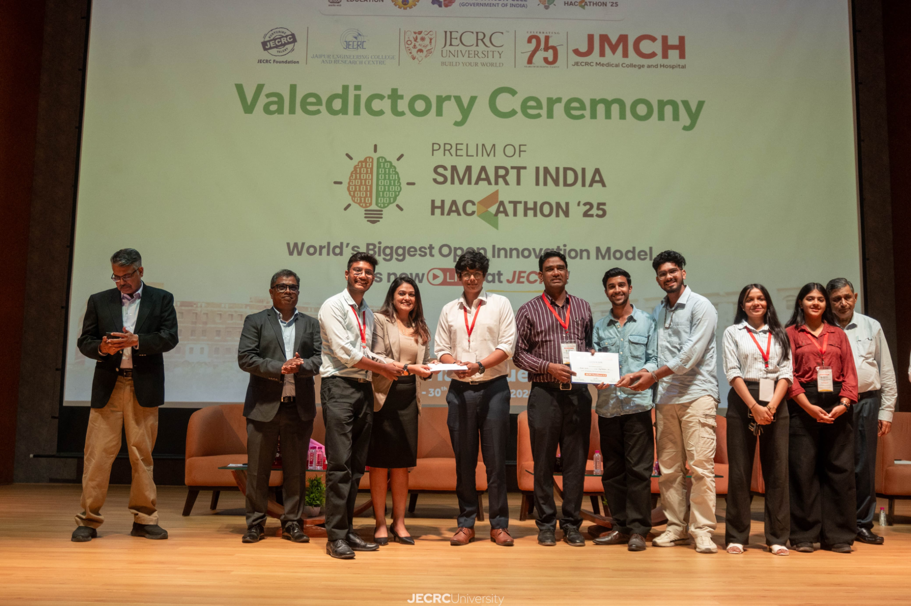

01 · Productivity
Built project
VoicePad
A voice-notes application that helps users capture thoughts through recording, transcription and organized notes.
- Voice recording and playback
- Speech-to-text note capture
- Summary workflow and searchable notes
Android developer · Builder · Learner
I'm Vishal Sharma, a Kotlin-focused Android developer and B.Tech CSE student. I love turning ideas into useful, interactive and meaningful mobile experiences.

01 / About me
A developer who enjoys transforming imagination into applications people can actually use.
I'm Vishal Sharma, a B.Tech Computer Science student at JECRC University and an Android Developer passionate about creating applications that combine functionality, creativity and a thoughtful user experience.
I chose Android development because I enjoy building interactive mobile experiences with Kotlin and modern Android tools. I love experimenting, solving real-world problems and learning through every application I create.
My biggest goal is to publish useful apps on the Google Play Store, collaborate with talented developers and build products that are interesting rather than ordinary.
02 / Selected work
Real projects, practical architecture and a focus on experiences that feel simple and engaging.
A voice-notes application that helps users capture thoughts through recording, transcription and organized notes.
A digital wardrobe application for organizing clothing, exploring outfit combinations and planning what to wear.
Explore GitHubContinuously exploring new ideas, APIs and user experiences to turn small concepts into useful products.
Explore GitHub03 / Toolkit
Technologies I use while building and learning modern Android applications.
Kotlin · Java · Python basics
Jetpack Compose · XML · Material 3
MVVM · Clean Architecture · Coroutines · Flow
Room · Retrofit · Firebase · REST APIs
Hilt · Git · GitHub · Testing
DSA · Hackathons · Prototyping
04 / Achievements
Hackathons have strengthened my teamwork, problem-solving and ability to turn ideas into working solutions.
Hackathon finalist.
Secured 6th position.
Secured 4th position.
Secured 7th position.
Selected and eligible to submit the problem statement through the portal for the internal round.
Secured 2nd position with the team.
SIH prelims winner.

MUJ HackX 4.0 · 2nd position
Dev Summit · Certificate of Appreciation
Hackathon achievement
SIH ceremony05 / The journey
I enjoy turning curiosity into products, collaborating with developers and shipping work that people can actually use.
Building WhatWeWear, improving my Kotlin and Android skills, and exploring ideas for useful mobile products.
Participating in hackathons, learning from teammates and building solutions under time constraints.
Publish more applications on the Play Store and work with ambitious developers on meaningful products.
06 / Start a conversation
I'm open to conversations about Android development, collaborations, interesting products and learning together.